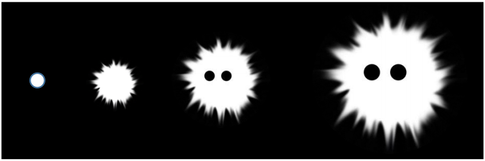

DISEÑO DE JUEGO 2D
Realizado por Karolyn Vintimilla
COMING BACK
1. STORYBORD
2. DETALLES
Este es un juego de un solo personaje que se juega en tercera persona,
Su objetivo es pasar por varios obstáculos hasta llegar al malo final.
El juego tiene una estética tétrica en donde el personaje es un
fantasma, esta basado un poco en lo que viene después de la muerte,
es decir esta en un lugar donde solo el existe y ve lo mismo todo el
tiempo.
El personaje tiene la habilidad de poder volar, sin embargo tiene un
limite de tiempo de vuelo el cual es corto. Este personaje muere en el
momento que topa con uno de los obstáculos, además cada vez que
muere, el jugador va a ver un escrito de que va la historia, sin embargo
no tiene ningún orden, y luego vuelve a empezar. No existe dialogo de
por medio.
El personaje en la parte final tiene la habilidad de lanzar 3 veces
neblina, esto hará que el malo final no se pueda mover y de esta
manera el personaje podría escapar; pero si no lo logra, el malo final se
moverá mas rápido, y los ojos se tornan de rojo.
La música en general es de suspenso. También existen los sonidos que
van de acuerdo a cada obstáculo.
3.DISEÑO DE PERSONAJES
Personaje Principal
Enemigos

3.DISEÑO DE ESCENARIOS
REFERENCIAS
Walk in the dark (Video Game)
The Swapper (Video Game)